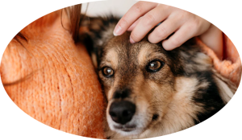
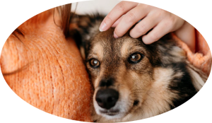

ADOTE UM AMIGO
Estamos muito felizes de ter você aqui! Ajudamos cães e gatos abandonados a encontrarem um novo lar e você a encontrar um amiguinho especial.

Por que adotar:
Você salva a vida de um animal e ele ganha um lar novo
Garante um companheiro em todos os momentos
Diminui o número de animais abandonados
 

Além de adotar, você também pode:
Apadrinhar um pet
Oferecer um lar temporário
Ser voluntário do abrigo
Doar alimentos e acessórios